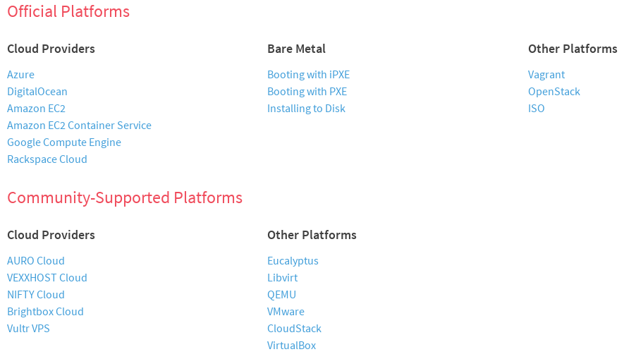

De onde veio a necessidade?
Sistema de IPTV - com um navegador web como UI
SetTopBox na casa do usuário
O que é o IPTV?
- Este sistema é fornecido para provedores de internet (ISP)
- Utiliza a infraestrutura de rede do provedor para transmitir
- Necessário alta velocidade (Fibra ótica)
- Não é TV via internet
(volume, canal atual, audio e legenda de cada canal)


Caracteristicas:
- Single page application
- Grande interatividade
- Muitas requisições para cada comando do usuário
- Conexões "persistentes"
- Frontend evoluindo muito rapidamente
- Too Many Open Sockets
- Too Many Open Files
- Carga de arquivos estáticos
- Carga e consumo de banco
- Limites nas aplicações
Tentativas:
- Vários testes de carga com requests - #FAIL
- Baseados em logs - #FAIL
- Direto no javascript (Simulando digitação - controle remoto) - #SUCCESS
Caminho seguido
Abrir multiplas instâncias de browser com parametros
# Rodando chrome - teste
$ /opt/google/chrome/chrome_sandbox --kiosk \
--disk-cache-size=1 --media-cache-size=1 \
--disable-simple-cache --disable-cache \
--user-agent="serial=Helber;mac=FF:00:00:00:00:97;" \
"http://middleware.iptvdomain/epg/?profile_test=guide_programmes"
Chrome compartilha processos recursos
Multiplas instancias #FAIL
Multiplas abas #FAIL
Resolver isolamento
(Docker)
# Rodando chrome - teste
/usr/bin/docker run -p 5900 --rm --privileged \
-e IPTV_PROTO=http \
-e IPTV_DISABLE_CACHE=false \
-e IPTV_SERIAL=FAKE_00000000000000000010 \
-e IPTV_MAC=00:00:00:00:00:0A \
-e IPTV_HOST=middleware.iptvdomain \
-e IPTV_PATH=debug/?profile_test=guide_programmes#repg \
--name cianet-chrome-test-10 helber/google-chrome-test
- Enjaulei o bicho #SUCCESS
- Consumo de recursos, pouca coisa a mais que o próprio processo#SUCCESS
- Meta de teste simular 7.000 usuários simultâneos
- Agora só tenho que colocar mais 6999 BUÁÁÁ ;(
Pricisamos multiplicar
- Servidores?
- Agentes?
- Comandos ssh
- Trabalho para adicionar servidores
Depois de alguma pesquisa - CoreOS
- 140 Mb comprimido
- Não roda Python, Perl, Ruby, Javascript, ...
- Sem gerenciamento de pacotes
- Sem compilador
- Orquestração de serviços
- Se um servidor cair os serviços são iniciados automaticamente nos outros
-
Resolve conflitos entre instâncias de containers
- rode o X no mesmo servidor de Y
- Não deixe o X rodar no mesmo servidor de Y
- Somente uma instancia do Z pode estar rodando
- Roda somente no servidor X
CoreOS
Opções de inicialização e plataformas
https://coreos.com/docs/#running-coreos DHCP e PXE
...
allow booting;
allow bootp;
ddns-update-style interim;
ignore client-updates;
...
subnet 10.0.0.0 netmask 255.255.255.0 {
...
option subnet-mask 255.255.255.0;
option broadcast-address 10.0.0.255;
range dynamic-bootp 10.0.0.200 10.0.0.240;
next-server 10.0.0.10;
filename "pxelinux.0";
}
PXE - Boot
Os arquivos são carregados por tftp da maquina 10.0.0.10
Sistema de boot vai carregar pxelinux.0
No dir: /var/lib/tftpboot/pxelinux.cfg/ ficam as configs
# Arquivo: default
default coreos
prompt 1
timeout 15
display boot.msg
label coreos
menu default
kernel coreos_production_pxe.vmlinuz
append initrd=coreos_production_pxe_image.cpio.gz \
cloud-config-url=http://10.0.0.5/pxe-cloud-config.yml
O principal neste ponto é pxe-cloud-config.yml
CoreOS - Inisialização do SO
Um linux com quase nada
- cloud-init
- Systemd
- Docker (Containers e isolamento)
- Etcd (Banco de dados - chave/valor)
- Fleet (Agente / Orquestração)
- Kubernetes (Agente / Orquestração - by Google)
- Flannel (Networking)
- rkt
CoreOS - cloud-config
#cloud-config
ssh-authorized-keys:
- ssh-rsa AAAAB3Nza...
users:
- name: helber
coreos-ssh-import-github: helber
groups:
- sudo
- docker
- name: root
passwd: $1$wCH/vSmc$...
coreos:
fleet:
etcd_servers: "http://10.0.0.9:4001"
units:
- name: etcd.service
mask: true
- name: fleet.service
command: start
- name: mnt-backupHelber.mount
command: start
content: |
[Unit]
Description=Mounts fileserver
Wants=network.target
After=network.target
After=remote-fs.target
[Mount]
Where=/mnt/backupHelber
What=10.0.0.10:/mnt/backupHelber
Type=nfs
[Install]
WantedBy=multi-user.target
Systemd
Criando nosso serviço para rodar do cluster
Hoje padrão de init das distribuições linux
[Unit]
Description=Cianet webkit %i
After=docker.service
Requires=docker.service
[Service]
TimeoutStartSec=0
ExecStartPre=-/usr/bin/docker kill cianet-webkit-test-%i
ExecStartPre=-/usr/bin/docker rm cianet-webkit-test-%i
ExecStartPre=/usr/bin/docker pull helber/cianet-webkitgtk3
ExecStart=/usr/bin/docker run -p 5900 --rm --privileged \
-e IPTV_PROTO=http \
-e IPTV_DISABLE_CACHE=false \
-e IPTV_SERIAL=FAKE_00000000000000000010 \
-e IPTV_MAC=00:00:00:00:00:0A \
-e IPTV_HOST=middleware.iptvdomain \
-e IPTV_PATH=epg/?profile_test=guide_programmes \
--name cianet-webkit-test-%i helber/cianet-webkitgtk3
ExecStop=/usr/bin/docker stop cianet-webkit-test-%i
[Install]
WantedBy=multi-user.target
ETCD
Banco de dados chave-valor
Preparado para ser tolerante à falha e distribuido OK
Tudo de estado de serviços e servidores estão nele OK
Serviços como o Fleet (proximo slide) se baseia nele
Fleet
Agente de controle de Systemd Units
Lê e escreve as informações do etcd e executa as Units
Orquestrador da unidades rodando
Faz o gerenciamento do que roda onde e quando
fleetctl - comando de controle do fleet
$ fleetctl list-machines
MACHINE IP METADATA
dffbdc1f... 10.0.0.183 -
$ fleetctl list-units
UNIT MACHINE ACTIVE SUB
selenium-chrome-debug@1.service dffbdc1f.../10.0.0.183 active running
selenium-chrome-debug@2.service dffbdc1f.../10.0.0.183 active running
selenium-hub.service dffbdc1f.../10.0.0.183 active running
Serviço exemplo
Criando nosso serviço para rodar do cluster
# selenium-hub.service
[Unit]
Description=Selenium hub
After=docker.service
Requires=docker.service
[Service]
EnvironmentFile=/etc/environment
TimeoutStartSec=0
ExecStartPre=-/usr/bin/docker kill selenium-hub
ExecStartPre=-/usr/bin/docker rm selenium-hub
ExecStartPre=/usr/bin/docker pull selenium/hub:2.45.0
ExecStart=/usr/bin/docker run --rm --name selenium-hub -p 4444:4444 selenium/hub:2.45.0
ExecStartPost=/bin/bash -c "source /etc/environment; IF=$(ifconfig | grep RUNNING| \
egrep -i '^(en|eth)'| cut -d':' -f1| tail -n1) && HOST_IP=$(/bin/ifconfig $IF | \
awk '/inet /{print $2}') && /usr/bin/etcdctl set /cianet/HUB_IP $HOST_IP"
ExecStop=/usr/bin/docker stop selenium-hub
ExecStopPost=-/usr/bin/etcdctl rm /cianet/HUB_IP
[Install]
WantedBy=multi-user.target
[X-Fleet]
Conflicts=selenium-hub
Serviço de carga
#cianet-webkit-debug@10.service
[Unit]
Description=Cianet webkit %i
After=docker.service
Requires=docker.service
[Service]
TimeoutStartSec=0
ExecStartPre=-/usr/bin/docker kill cianet-webkit-test-%i
ExecStartPre=-/usr/bin/docker rm cianet-webkit-test-%i
ExecStartPre=/usr/bin/docker pull helber/cianet-webkitgtk3
ExecStart=/usr/bin/docker run -p 5900 --rm --privileged \
-e IPTV_PROTO=http \
-e IPTV_DISABLE_CACHE=false \
-e IPTV_SERIAL=FAKE_00000000000000000010 \
-e IPTV_MAC=00:00:00:00:00:0A \
-e IPTV_HOST=middleware.iptvdomain \
-e IPTV_PATH=epg/?profile_test=guide_programmes \
--name cianet-webkit-test-%i helber/cianet-webkitgtk3
ExecStop=/usr/bin/docker stop cianet-webkit-test-%i
[Install]
WantedBy=multi-user.target
#view-cianet-webkit-debug@.service
[Unit]
Description=Debug Cianet Webkit %i
BindsTo=cianet-webkit-debug@%i.service
Requires=cianet-webkit-debug@%i.service
[Service]
EnvironmentFile=/etc/environment
ExecStartPre=-/usr/bin/docker exec -d cianet-webkit-test-%i /opt/bin/start_rx.sh
ExecStartPre=-/bin/bash -c "source /etc/environment; IF=$(ifconfig | grep RUNNING| \
egrep -i '^(en|eth)'| cut -d':' -f1| tail -n1) && HOST_IP=$(/bin/ifconfig $IF | \
awk '/inet /{print $2}') && DPORT=$(/usr/bin/docker port cianet-webkit-test-%i 5900 | \
cut -d':' -f2) && echo view-%i-$HOST_IP:$DPORT"
ExecStart=/bin/bash -c "source /etc/environment; while true; do IF=$(ifconfig | grep RUNNING| \
egrep -i '^(en|eth)'| cut -d':' -f1| tail -n1) && HOST_IP=$(/bin/ifconfig $IF | \
awk '/inet /{print $2}') && DPORT=$(/usr/bin/docker port cianet-webkit-test-%i 5900 | cut -d':' -f2) \
&& /usr/bin/etcdctl set /cianet/client/view-cianet-webkit-test-%i $HOST_IP:$DPORT;sleep 45;done"
ExecStop=/bin/bash -c "source /etc/environment; /usr/bin/etcdctl rm /cianet/client/view-cianet-webkit-test-%i"
ExecStopPost=-/usr/bin/docker exec cianet-webkit-test-%i /opt/bin/stop_rx.sh
[X-Fleet]
MachineOf=cianet-webkit-debug@%i.service